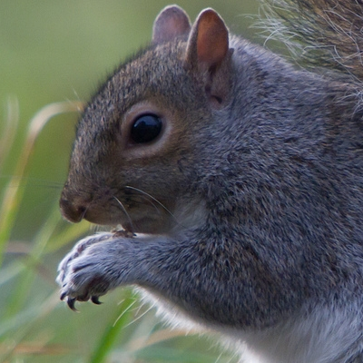

Curiosidades sobre os esquilos
Você sabia que os esquilos são verdadeiros "plantadores de árvores" da natureza? Durante o outono, muitas espécies de esquilos passam semanas escondendo milhares de nozes, sementes e bolotas em diferentes lugares para terem comida durante o inverno. O mais impressionante é que eles não conseguem se lembrar de todos os esconderijos que criam. Como resultado, centenas dessas sementes acabam esquecidas no solo. Com o passar do tempo, muitas dessas sementes germinam e se transformam em novas árvores. Isso significa que os esquilos ajudam florestas inteiras a crescer sem nem perceber! Alguns cientistas acreditam que eles têm um papel fundamental na recuperação de áreas florestais e na dispersão de diversas espécies de plantas. Além disso, os esquilos possuem uma memória espacial extremamente avançada. Eles conseguem localizar muitos dos seus esconderijos usando pontos de referência como pedras, troncos, galhos e até a posição do terreno. Em algumas espécies, um único esquilo pode esconder mais de 10 mil sementes em apenas uma temporada.
